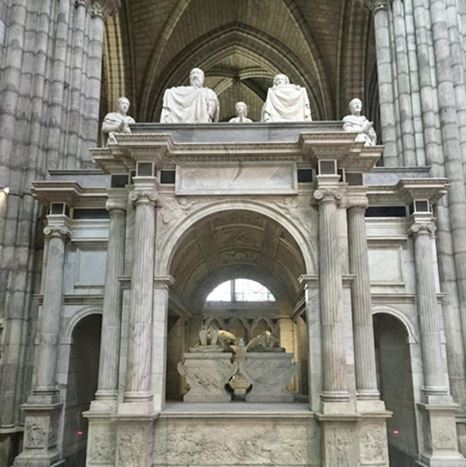

Le mois dernier, Alexandra Cerdan, journaliste de Paris-Montmartre, s’entretenait avec le prince Louis de Bourbon, héritier du trône de France. Voici le résultat de cette entrevue :
Alexandra Cerdan : En l’an 1792, la Convention abolit la royauté en France et proclame la République. Pensez-vous que cette décision soit irréversible ?
Monseigneur Louis de Bourbon : En politique l’irréversible n’existe pas. L’histoire nous le montre à travers de multiples exemples. La royauté en France a connu des heures sombres à côté de celles de gloire et de grandeur. Pour ne rester qu’autour de l’événement que vous citez, souvenons-nous que cette République n’eut qu’un temps bien court. Le Consulat l’a remplacé, puis l’Empire. La monarchie a été restaurée en 1814. Le XIXe siècle a connu après 1848 une longue instabilité institutionnelle. Tout est possible, cela dépend de ce que souhaitent les Français.
Alexandra Cerdan : Quel regard portez-vous sur la situation de la France et de l’Europe ?
Monseigneur Louis de Bourbon : Actuellement la situation de l’Europe est assez complexe. Le « vieux » continent affronte des crises multiples. Il y a la crise économique d’un monde qui est passé, sans doute trop rapidement, d’une économie reposant sur de multiples entreprises employant une main-d’œuvre importante en utilisant d’abondantes ressources à une économie dématérialisée, financiarisée, demandant plus de cerveaux que de bras. Tout cela s’est fait rapidement. Il faut trouver de nouvelles règles de conduite d’autant plus difficiles à trouver qu’elles doivent l’être dans le cadre non pas des Etats mais des continents, voire du monde. Ce bouleversement des conditions de vie s’accompagne d’un bouleversement des valeurs. Certaines anciennes ont été rejetées. On se rend compte désormais que sans elles la société n’est plus viable. Heureusement il y a de nombreux signes d’un renouveau qui se met en place. Ce n’est pas en regardant derrière que l’on trouvera les solutions mais en affrontant, sans œillères, le futur et en redonnant à l’homme toute sa place. C’est lui le référant du progrès.
Alexandra Cerdan: Pourquoi n’avez-vous pas fait une carrière dans la politique ?
Monseigneur Louis de Bourbon : Il n’appartient pas à un chef de maison souveraine de faire de la politique au sens des partis. Il faut être réaliste. Quel serait le poids de ces prises de position ?
Ce qui est certain en revanche est que, par ce que je représente, c’est-à-dire une autre tradition politique que celle dans laquelle nous vivons, j’offre une alternative.
Alexandra Cerdan : A votre avis, pourquoi la France ne reconnaît-elle pas, même symboliquement pour un bien-être spirituel, qu’elle a aussi un Roi – au même titre que l’Espagne, l’Angleterre, la Belgique, etc.
Monseigneur Louis de Bourbon : Les pays que vous citez sont des monarchies. Les rois y ont donc toute leur place et pas seulement symbolique. En France, depuis l’abolition des lois d’exil, les héritiers des maisons qui ont à un moment ou un autre régné sur la France – car cela s’applique aussi aux Bonaparte ou aux Orléans – peuvent tenir leur rôle de témoins. Comme héritier des rois de France qui ont régné près de 1000 ans sur la France, j’essaye de remplir ma tâche et je suis présent partout où les autorités me demandent de faire vivre ou représenter la mémoire de la tradition et de la grandeur passée.
Alexandra Cerdan : Une partie du peuple français aimerait vous voir plus souvent dans les médias. Qu’en pensez-vous ?
Monseigneur Louis de Bourbon : Il faut poser la question aux médias… Mais je note lors de mes déplacements en province que les médias locaux sont beaucoup moins frileux que les médias nationaux.
Alexandra Cerdan : Quels sont vos sports favoris et lesquels d’entre eux pratiquez-vous ?
Monseigneur Louis de Bourbon : Je pratique ou j’ai pratiqué beaucoup de sports. Avec l’âge les goûts changent. Je pratique plusieurs fois par semaine la course à pied, qui est un bon contrepoids au stress de la vie quotidienne, et avec mes enfants je me suis remis au football !
Alexandra Cerdan : Pensez-vous que la tête d’Henri IV pourra être inhumée comme il se doit, en la basilique de Saint Denis ?
Monseigneur Louis de Bourbon : Je l’espère bien. Saint-Denis est la nécropole des rois de France. Le roi Henri IV y avait trouvé le lieu de sa sépulture en 1610. La Révolution l’en a chassé. Il est normal que ses restes y reviennent. Chaque fois que la vérité historique peut être rétablie, par une restauration ou en redonnant à des objets leur place d’origine, cela doit être fait. C’est ainsi que les monuments conservent leur authenticité et gardent tout leur sens.
Alexandra Cerdan: Vous avez fait expertiser la tête d’Henri IV. Quelle a été votre réaction lorsqu’elle a été identifiée authentique ?
Monseigneur Louis de Bourbon : Je donne une grande importance à l’analyse scientifique. Alors j’ai été très heureux des premiers résultats qui ont montré l’authenticité de la relique. Ce fut une grande satisfaction pour moi. D’autres analyses sont en cours car certains avaient soulevé des doutes sur quelques points ou interprétations. Quand le dossier sera clos nous pourrons poursuivre, avec les autorités publiques et l’administration, le projet de dépôt solennel à Saint-Denis.
Alexandra Cerdan : Pour terminer, je souhaite vous laisser le dernier mot.
Monseigneur Louis de Bourbon : Je m’adresse donc aux Français à qui je dis, comme avant moi le Saint-Père : n’ayez pas peur ! Pas peur de l’avenir. Une histoire riche de traditions et de grandeur reposant sur les valeurs nées du baptême de Clovis, sont là pour aider à croire dans le destin de la France.
Partager cette page